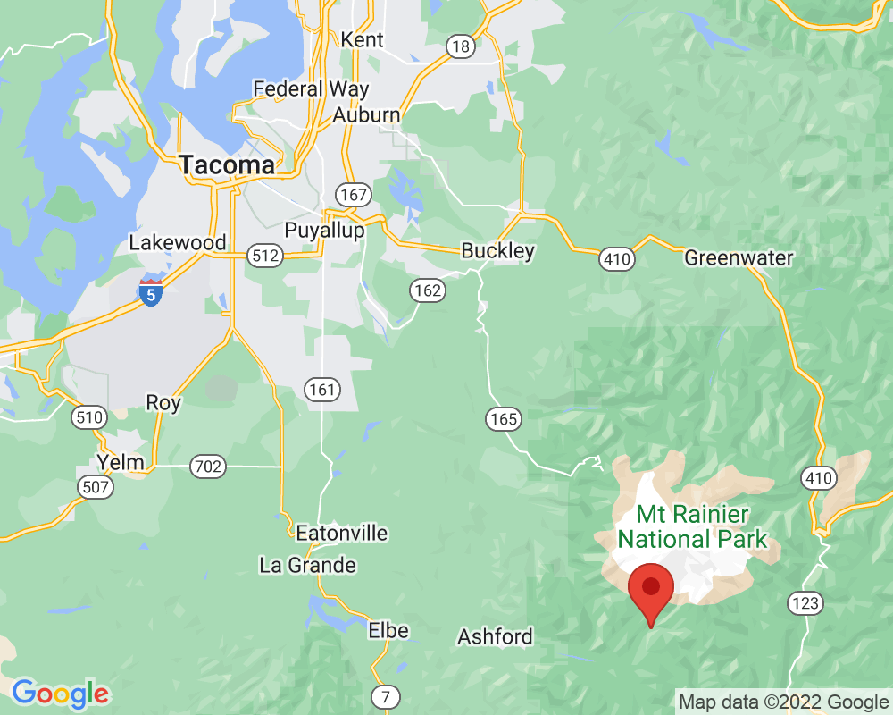

Nisqually River
This is Nisqually River. It begins higher up on Mt. Rainier where the end of Nisqually Glacier melts.
You can see the large rocks the river has pushed. You can also see where the river has eroded the land on both sides.
Visited: September 17, 2022 at 7:16 AM
Location: Nisqually Entrance
